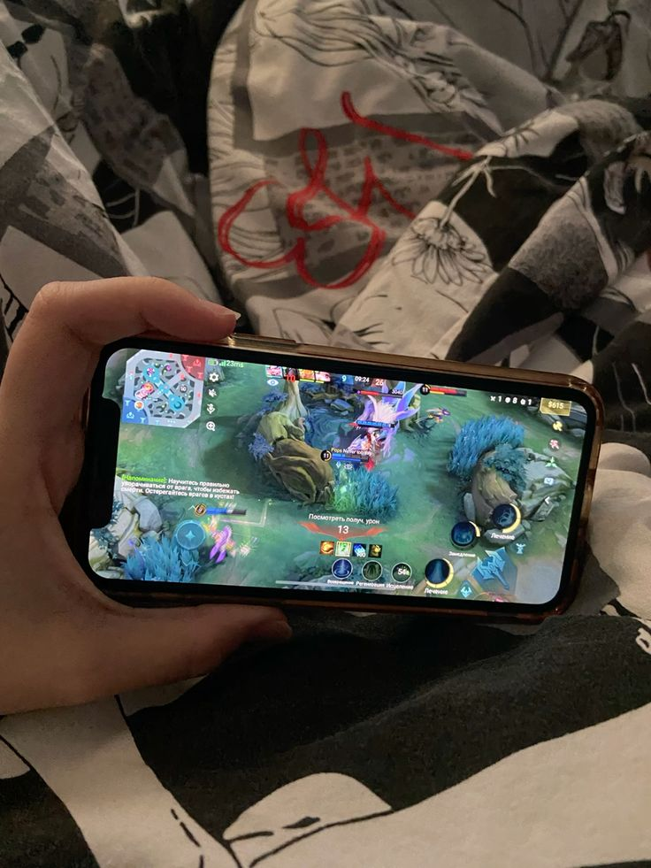
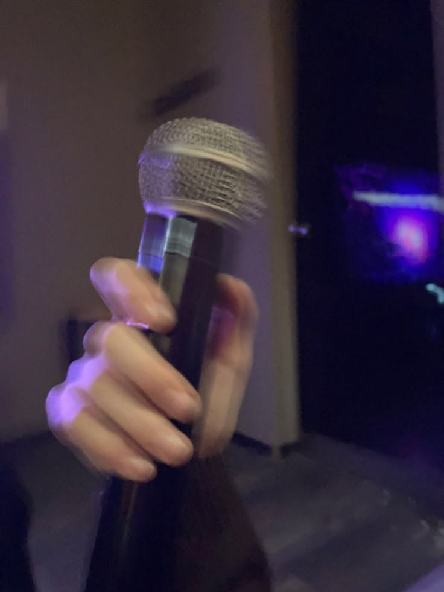
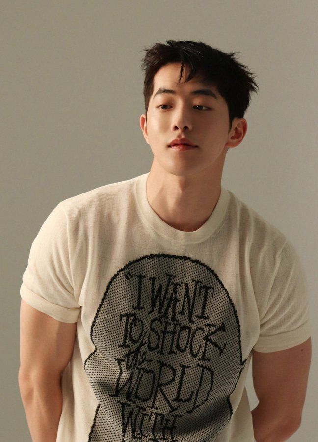
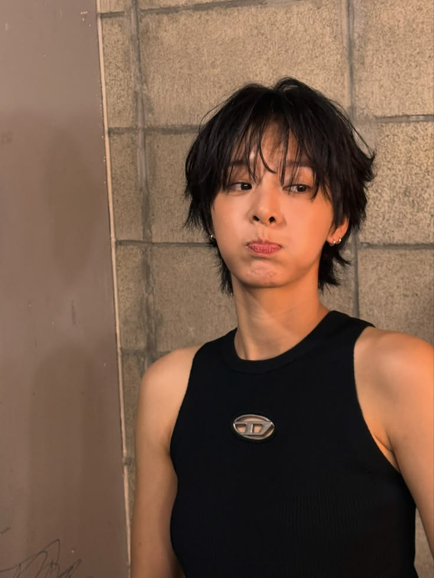
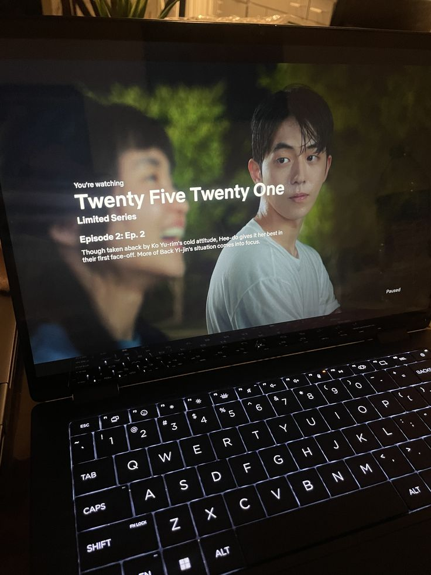
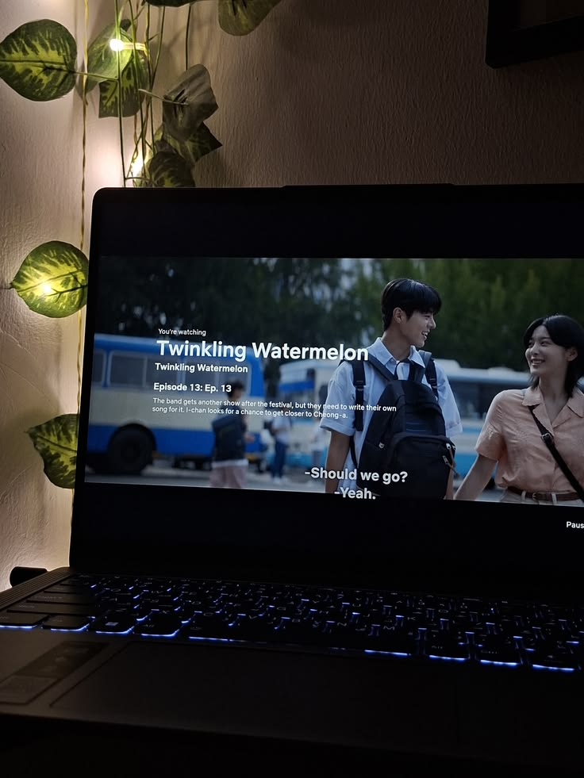
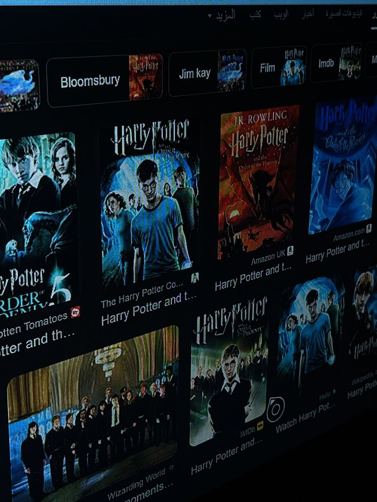

Hello! My name is Danica
Hi, I'm Danica, a first-year BSCS student at Bicol University. I'm a quiet but determined person who values family, enjoys life's simple moments, and is always open to learning and new experiences.
About Me
Hobbies
-
Watching K-dramas
-
Playing online games

-
Singing

Class schedule
| Subject | Day | Time |
|---|---|---|
| CS102: Computer Programming 1 | MWTh | 4:00-7:00pm, 8:00-10:00am |
| Phys1: Physics for Computing | TTh | 1:00-2:30pm |
| Math101: Mathematical Analysis 1 | TThF | 2:30-4:00pm, 1:00-3:00pm |
| CS101: Intro to Computing | Wed | 9:00am-12:00pm |
| GEC11: Understanding the Self | Fri | 9:00am-12:00pm |
| CWTS: Civic Welfare Training Service | Sat | 7:00-10:00am |
| PATHFit1: Movement Competency Training | Sat | 4:00-6:00pm |
Fun Facts About Me
-
Scorpio
I am a Scorpio, which makes me passionate and determined.
-
Eldest daughter
I am the eldest daughter in my family, so I have learned to be responsible and independent.
-
K-drama fan
I enjoy watching K-dramas, especially stories that make me laugh, cry, and stay up for one more episode.
-
Game curious
Playing online games sparked my curiosity about how websites and programs work behind the screen.
My path into computing
-
My interest in technology started with playing online games on websites like Y8. I always wondered how these games were made and how they could run on a simple webpage. This curiosity made me want to learn how technology works behind the scenes.
-
I chose BS Computer Science at Bicol University because I wanted to turn my curiosity about technology into something I could learn and develop. I was also inspired by my tito, who is a programmer. Starting my first year was overwhelming at first, but it helped me realize how much I still have to learn.
-
As I continue my journey, I hope to improve my programming skills, understand how technology works, and gain more experience in creating useful applications. I know there will be challenges along the way, but I am willing to learn, improve, and discover what I can achieve in this field.
Favorites or skills
K-actors
-
CHOI HYUN WOOK
-
NAM JOO HYUK

-
SEOL-IN AH

K-groups
-
ENHYPEN
-
BLACKPINK
-
CORTIS
Series
-

Twenty-Five Twenty-One is a bittersweet coming-of-age drama that follows a passionate teenage fencer and an ambitious young reporter navigating love and ambition during the 1998 IMF financial crisis. Though they deeply comfort and inspire each other's dreams, the realistic pressures and distance of adulthood ultimately force them to part ways, leaving a beautiful memory of first love.
-

Twinkling Watermelon is a fantasy youth drama about Eun-gyeol, a CODA student and musician who accidentally time-travels back to 1995. There, he befriends his future father as a teenager, joins his band, and tries to alter the past to ensure his parents still fall in love.
-

Harry Potter is a fantasy film series based on the novels by J.K. Rowling. The series follows the journey of a young wizard, Harry Potter, and his friends Hermione Granger and Ron Weasley as they navigate the magical world and face various challenges.
Skills I am building
- Master programming
- Structure and style web pages
- Enhance problem-solving skills
- Improve communication and teamwork
Website
One website I enjoy visiting is Y8 because I play games here when I'm bored, especially with my friends or siblings.
Goals
In the next few years, I want to become a skilled programmer who understands how things work, not just how to make them run. I hope to improve my programming, web development, and problem-solving skills. Most of all, I want to become more confident in facing challenges and solving problems one step at a time.
I also want to use what I learn to give my family a better and more comfortable life. Aside from having a stable career, I hope to live a simple and peaceful life, travel to different places, and experience new things. I may be a quiet person, but I want to show what I am capable of through my actions and the things I create.
Reflection
Making this page helped me realize that creating a website can be challenging, but breaking the work into smaller steps makes it easier. At first, I doubted if I could finish it because it seemed complicated, but with the help of AI tools, I was able to complete it.
Compared to my first About Me page, this version has a better layout, and a clearer design. I added hover effects and a layout that works on a phone.